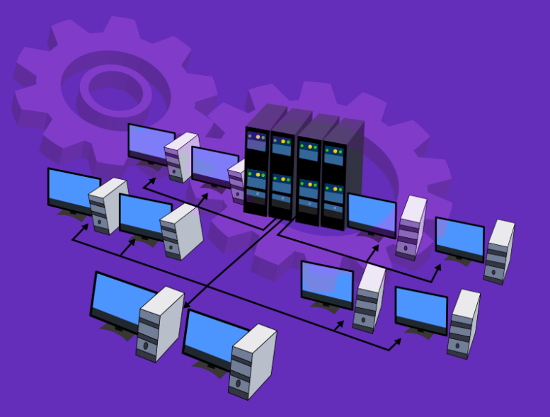
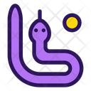
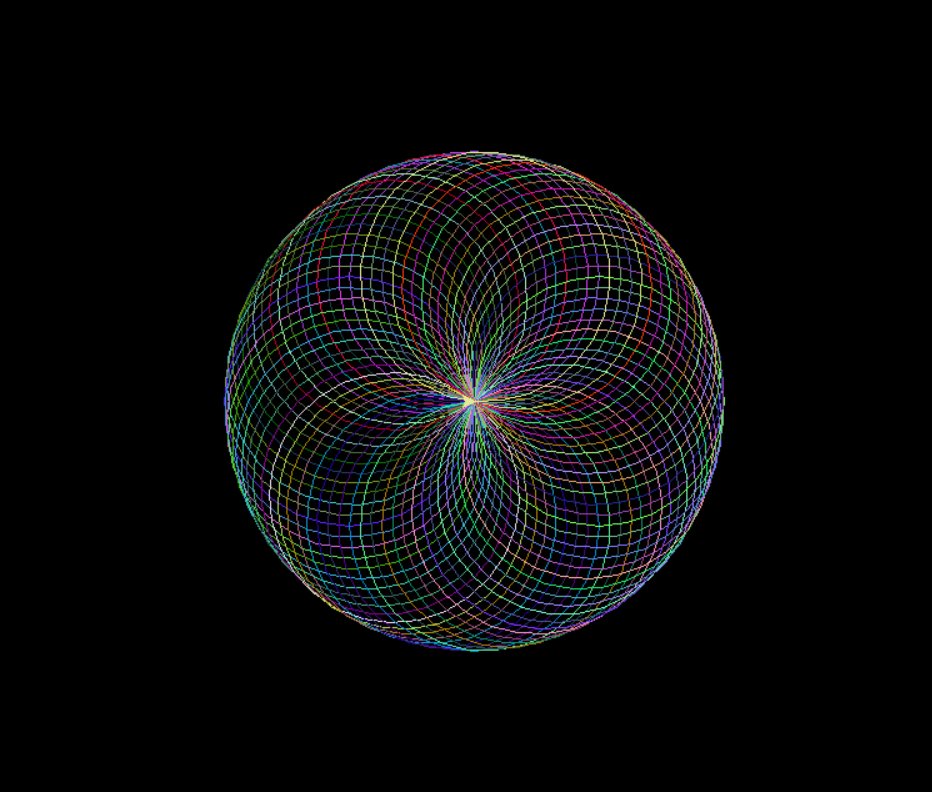

Designed and implemented a sophisticated React-based dynamic form
to efficiently gather comprehensive infrastructure requirements
from users. The form features intuitive questions tailored to
determine the optimal technologies for building and deploying
applications, enhancing user experience and accuracy in capturing
project needs.
Integrated a robust backend API using Python and Django for
seamless form submission and real-time updates. Leveraged Google
Gemini LLM with advanced prompt engineering to deliver actionable
content, improving the precision of infrastructure
recommendations.
Enabled interactive modifications to the generated infrastructure
design through a chat interface. Users can easily adjust the
content without repetitive information entry, leading to a 40%
reduction in manual input and increasing user satisfaction by
30%.
Implemented real-time context saving to ensure smooth transitions
and modifications without losing previous inputs, thus enhancing
the application's responsiveness and user engagement.
Introduced High-Level Design (HLD) generation feature, providing
users with a visual overview of their service architecture. This
feature has resulted in a 25% improvement in project planning
accuracy and has been well-received for its clarity in presenting
infrastructure layouts.
LLM Chatbot using Google's Gemini Pro with Streamlit Python || Gen AI
View Project
🚀 Excited to share my latest project: a classic Snake game built
using the Turtle module in Python! 🐍💻 Diving into this project
was a fantastic way to enhance my programming skills and get
hands-on experience with game development. From handling user
input to creating game logic and designing a simple yet engaging
interface, this journey has been both challenging and
rewarding.
🔍 Key learnings:
Utilizing Python’s Turtle module for graphics
Implementing game loops and collision detection
Enhancing
problem-solving and debugging skills

Excited to share my latest Python project! 🎨✨ Using the Turtle module, I created a spirograph that beautifully demonstrates the intersection of coding and art. Check out the mesmerizing patterns and explore the endless possibilities of Python.
View Project